软件工程
一、软件工程概述
软件的定义
程序+数据+文档 (不准确)
- 程序是按事先设计的功能和性能要求执行的指令序列
- 数据是使程序能正确处理信息的数据结构
- 文档是与程序开发、维护、使用有关的图文资料*
- 提高软件开发过程能见度
- 记录开发过程有关信息，便于使用维护
- 作为开发人员阶段工作成果和结束标志
- 提高开发效率
- 作为软件运行、维护、培训资料
- 便于用户了解软件功能、性能
软件的特点*
- 软件是开发出来的、工程化的，并不是制造出的
- 充满了个人行为和个人因素
- 尚未实现自动化
软件危机
软件开发维护时出现的一系列严重问题*
- 超预算、超出计划时间
- 软件运行效率低
- 软件质量差
- 软件不符合要求
- 项目难管理，代码难维护
- 软件不能交付
软件危机的原因
- 软件的发展速断远滞后于硬件的发展速度
- 软件本身逻辑复杂
- 软件规模庞大
- 忽视需求分析
- 错误认为:软件开发=程序编写
- 轻视软件维护
软件工程
IEEE定义
- 应用系统化、学科化、定量方法开发、运行维护软件
- 对第一点的研究
目标
在时间和预算内，按需求开发易修改、高效、可靠、可维护、适应能力强、可移动、可重用的软件。
三要素*
- 方法
- 工具
- 过程
二、软件过程模型
软件生命周期
软件从系统设计、投入使用到被淘汰的全过程
CMMI成熟度模型标准
| 级别 | 描述 |
|---|---|
| 1.初始级 | 有能力的人和个人英雄主义 |
| 2.可重复级 | 基本的项目管理 |
| 3.已定义级 | 过程标准化 |
| 4.量化管理级 | 量化管理 |
| 5.优化级 | 持续的过程改进 |
过程模型
瀑布模型*
- 开发过程与软件生命周期一致，也被称为经典的生命周期模型
- 以文档驱动
特点*：
- 阶段有顺序性与依赖性
- 前一阶段的工作完成，后一阶段才能开始
- 前一阶段的输出文档是后一阶段的输入文档
- 推迟实现的观点
- 编码前设置系统分析设计阶段，主要考虑系统的逻辑模型，不考虑物理实现
- 尽可能推迟物理实现
质量保证的观点
- 每个阶段必须完成规定文档
- 每个阶段结束前要对所有文档评审
graph LR A[可行性研究] --> B[需求分析] B --> C[概要设计] C --> D[详细设计] D --> E[实现] E --> F[组装测试] F --> G[验收测试] G --> H[使用维护] H --> I[退役]
缺点*
- 不灵活，下一阶段开始前，当前阶段需要固定
- 严格文档驱动，增大工作量
- 线性开发，只有等到过程末期才能见到开发成果，增大开发风险
- 早期需投入大量成本，难以应对客户需求变更
适用场合*
需求明确且在将来没有太大改变的情况
演化模型
首先实现软件最核心，最重要的功能
适用场合
- 需求不明确或需求经常变更
- 适用于中小型系统
分类
快速原型模型(原型模型)*
思路：先开发原型，实现最主要的功能，征求用户意见并完善，在确定使用该原型后，开始完整的开发。
优点：
- 软件、文档能明确符合用户需求
- 快速
- 可以在原型基础上开发或者抛弃
缺点：为快速建立原型，设计者可能不会用长远的眼光和维护的角度考虑系统
并行开发模型
- 所有任务同时存在，又处于不同的状态
增量过程模型
增量模型*
- 在前面增量基础上开发后面增量
- 迭代思想
- 第一个增量通常是核心产品
RAD：快速开发
螺旋模型*
优点：
- 强调风险管理
- 支持需求动态变化
- 评估更加准确
缺点：
- 若每次迭代效率不高，会影响成本及效率
- 团队需要较高的知识水平
- 只适用于大型软件开发
增量模型和螺旋模型的异同*
相同：都是现代式迭代方式
不同
- 两者迭代层次不同，增量模型是活动级迭代，螺旋模型是过程级迭代
- 需求分析时间不同，增量先做总体需求分析，再编码测试，逐个增量；螺旋模型在开发周期内采用瀑布模型
- 交付软件方式不同，增量每次的增量开发都是在上一次增量的基础上提交新的一部分软件；螺旋每次提交新的完整的系统
- 风险管理不同，增量通过扩充技术与经常客户反馈；螺旋直接植入风险分析
三、需求分析
需求获取
软件需求的来源及收集软件需求的方法
需求分析
确定系统必须有的功能和性能，系统要求的运行环境，并预测系统发展前景。
核心在于建立分析模型(DD、DFD等)
- 功能性需求：系统应该做什么
- 非功能性需求：必须遵守的标准与约束(性能等)
步骤*：
- 需求获取
- 需求提炼
- 需求描述(撰写需求规格说明书)
- 需求验证
任务：
- 建立分析模型
- 编写需求说明
数据字典(Data Dictionary DD)*
数据项
- 数据项名
- 类型
- 长度
- 取值范围
数据流
- 数据流名
- 简介其作用
- 数据流来源
- 数据流去向
- 数据流组成
数据文件或数据库
- 数据文件名
- 简述存放数据
- 输入数据
- 输出数据
- 数据存放的数据结构
- 存取频率
| 表示 | 含义 | |
|---|---|---|
| = | 定义为 | |
| A+B | 与 | |
| [A\ | B] | 或 |
| {A} | X由多个A组成 | |
| (A) | 可选 | |
| m{A}n | A至少出现m次，至多出现n次 | |
| “A” | 基本数据元素，默认值 | |
| a…b | 取值区间 |
E-R图
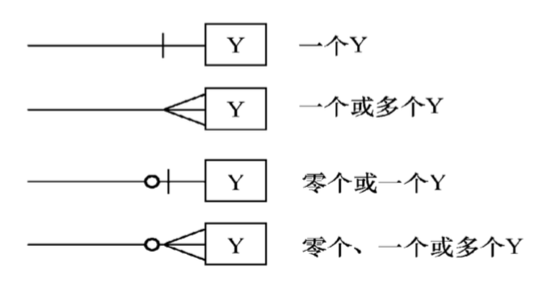
- 实体(矩形)
- 属性(椭圆)(主键：属性名下打下划线)
- 关系(菱形)
关系模式：实体名(属性)
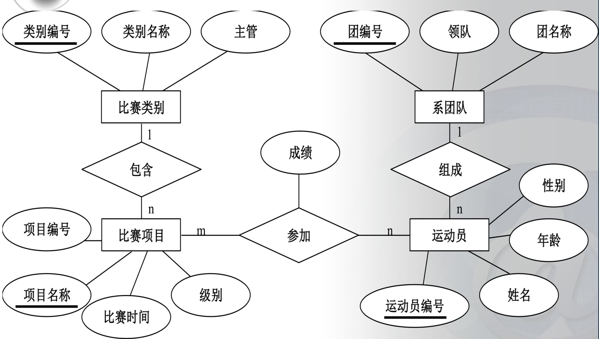
数据流图(Data Flow Diagram DFD)
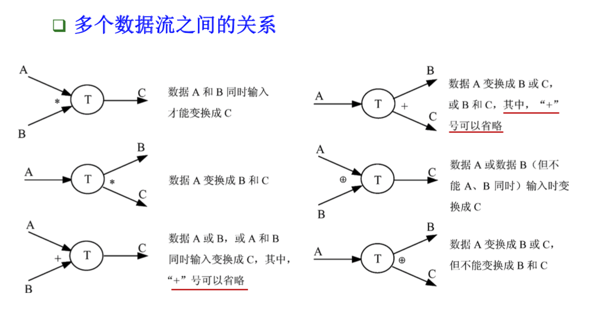
加工框应有编号
分解前后的数据流一致
顶层：只包含一个加工
底层：加工不能再分解(最好不要超过7个)
父子平衡
加工之间可有有多股数据流
除从文件流入、流出的数据流，其它数据流须有名字
状态-变迁图(Status Transfer Diagram STD)
状态：矩形；转换：有向箭头；规则表达式：转换条件
类似有限状态自动机
Petri网
加工说明(PSPEC)
判定树
判定表(条件+执行动作)
UML图
静态模型
用例图
用例图是显示一组用例、参与者以及它们之间关系的图
内容：
参与者
- 系统外部的人或物，以某种方式参与了系统执行
- 参与者在不同的组成部分可能扮演不同角色
- 外部、与系统交互(可能隐含时间、温度等)
用例
- 执行的操作
- 考虑每个参与者是如何使用系统的
- 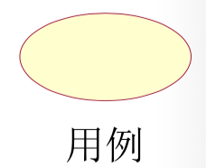
泛化、扩展、包含关系
泛化：同一业务的不同技术实现
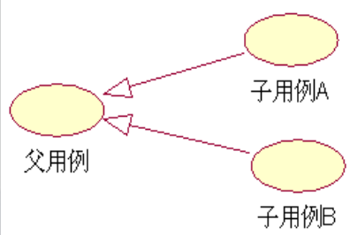
包含：基本用例会用到包含用例
- 包含用例应是可重用的
扩展：对基础用例的扩展
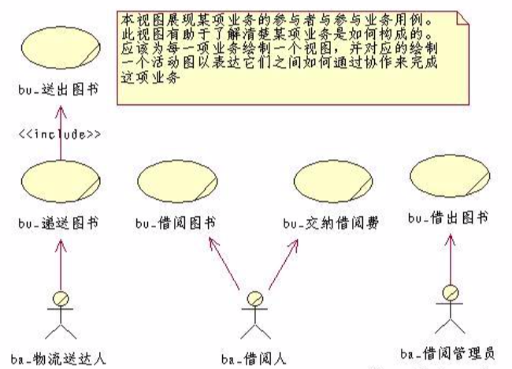
业务场景图：
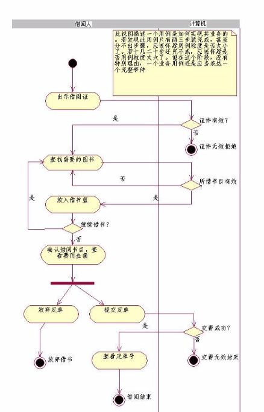
类图
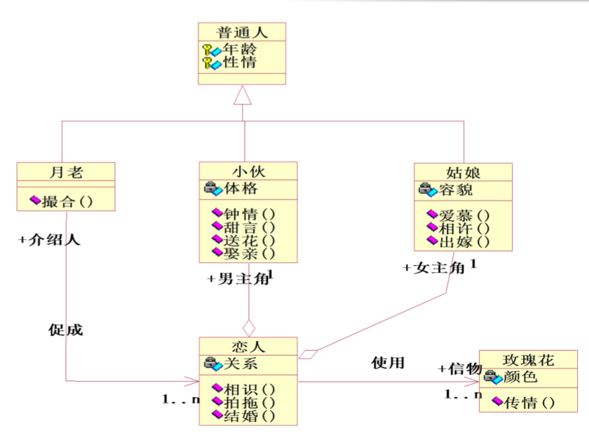
对象图
组件图
部署图
动态模型
顺序图
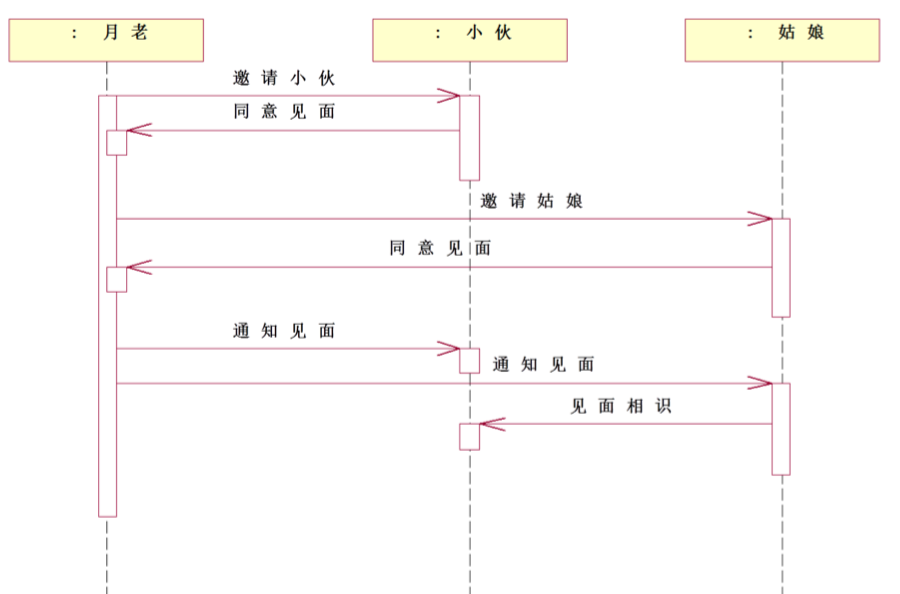
四、软件设计工程
软件架构*
开发架构、逻辑架构、数据架构、运行架构、物理架构
- 开发架构(程序)
- 程序单元
- 源文件、配置文件
- 程序库、框架
- 目标单元
- 程序单元组织
- 项目划分
- 项目目录结构
- 编译依赖关系
- 逻辑架构(职责)
- 职责划分
- 逻辑层
- 子系统、模块
- 关键类
- 职责协作
- 接口
- 协作关系
- 数据架构
- 数据单元
- 文件
- 数据库
- 存储格式
- 运行架构(控制流)
- 控制流
- 进程、线程
- 中断
- 控制流组织
- 启动与停机
- 控制通信
- 加锁与同步
- 物理架构
- 物理节点
- PC、服务器
- 物理硬件
- 软件安装、部署
- 系统软件选型
- 物理节点拓扑
- 连接方式、拓扑结构
- 物理层
体系结构设计原则
- 合适性
- 结构稳定性
- 可扩展性
- 可复用性
模块设计原则
信息隐藏
高内聚
内聚(Cohesion)：模块内部各成分间的关联程度
低耦合
耦合(Coupling)：模块间的依赖程度
内聚*
| 内聚 | 特点 | 强度 |
|---|---|---|
| 巧合内聚 | 模块内句段没有什么联系 | 弱 |
| 逻辑内聚 | 将几种功能组合，通过参数判断执行哪一个功能 | |
| 时间内聚 | 模块中包含了需同一时间执行的多个任务 | |
| 过程内聚 | 模块各部分相关，且必须按照指定顺序执行 | |
| 通信内聚 | 模块中各部分有同一输入数据或产生同一输出数据 | |
| 顺序内聚 | 模块各部分与同一个功能相关，前一个部分的输出是后一个部分的输入数据 | |
| 功能内聚 | 模块内的各个部分共同完成一个单一功能 | 强 |
耦合*
| 耦合 | 特点 | 强度 |
|---|---|---|
| 内容耦合 | 一个模块对另一个模块进行直接修改或引用或两个模块共享一部分代码 | 高 |
| 公共耦合 | 一组模块公用数据环境(全局变量在多个模块间使用) | |
| 外部耦合 | 模块间通过软件之外的环境连接 | |
| 控制耦合 | 一个模块传送给另一个模块的信息中包含了控制信息 | |
| 标记耦合 | 两个模块通过参数表传递一个数据结构的一部分 | |
| 数据耦合 | 两个模块仅通过模块参数交换信息，且交换信息全为简单数据 | |
| 非直接耦合 | 两个模块间没有直接关系 | 无 |
扇出
调用其它模块的数目
扇入
被其它模块调用的数目
结构化程序*
程序代码仅仅通过顺序、选择、循环三种结构连接，且每个代码块只有一个入口和一个出口
程序流程图*
缺点*：
- 容易使程序员过早考虑控制流程而不是全局结构
- 箭头代表控制流，可以随意转移控制，可能使程序过于混乱
- 表示数据结构方面存在不足
为使流程图描述结构化程序，必须只能用下面五中基本控制结构
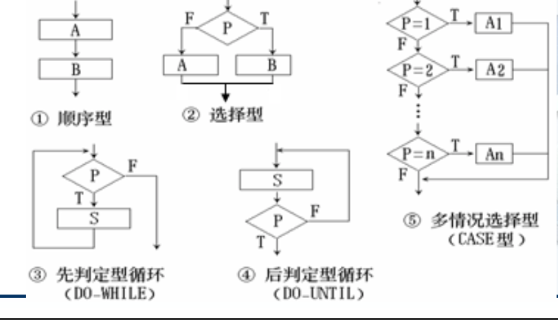
NS图(盒图)


PAD图
必定是结构化的
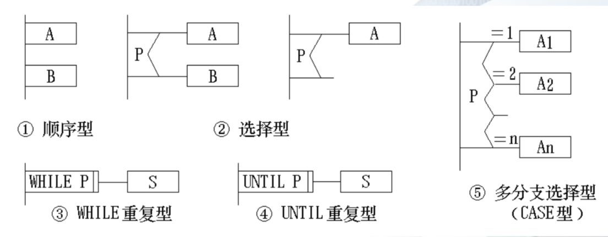
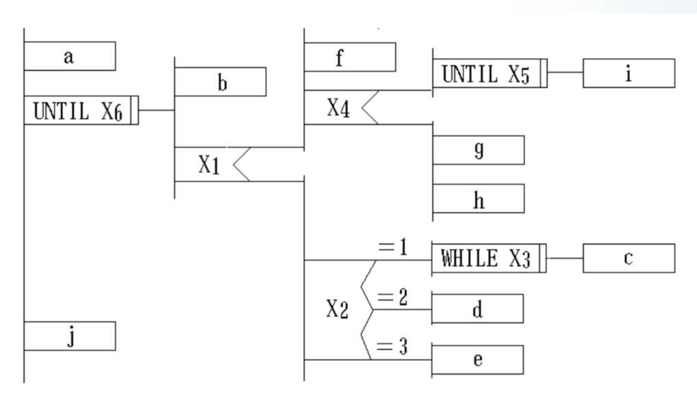
模块化和软件成本*
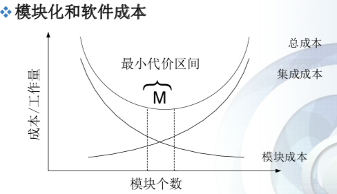
设计性语言PDL(Program Design Laguage)
伪代码
五、软件生产率与工作量的度量
软件度量
定义：对软件产品、开发过程、资源简单属性的定量描述
为什么需要软件度量
客观准确的项目估算，是项目成功的基础
项目估算
- 项目规模
- 项目工作量
- 项目资源
- 项目时间
- 项目成本
面向规模度量(直接度量)*
- 生产率 PM = L / E ( L:代码总量 E:软件工作量(人月) )
- 每千行代码平均成本： CKL = S / L (S:项目总开销)
- 文档代码比：DI = Pd / L
代码出错率：EQRI = Ne / L
优点：简单直观
缺点：
只适合于过程式设计语言
- 初期难以估算代码行数
功能点分析法*
不能直接度量
初期即可估算
功能点计算依赖于经验公式，主观因素较多
与语言无关
没有涉及算法复杂度
FP = (0.65 + 0.01 x $\sum F_i$) x CT
- CT：5个信息量的加权和
- $F_i$：14个因素的复杂性调节值(影响越大，数值越大)
- 0.65 0.01皆为经验常数
CT的计算
- 用户输入数×加权因子(简单=3,平均=4,复杂=5)
- 用户输出数×加权因子(简单=3,平均=4,复杂=5)
- 用户查询数×加权因子(简单=3,平均=4,复杂=5)
- 文件数×加权因子(简单=3,平均=4,复杂=5)
- 外部界面数×加权因子(简单=3,平均=4,复杂=5)
CT = 上述计算值的总和
PM：平均生产率(代码行/人月)
C：每个人月的成本
六、软件测试策略
软件缺陷*
- 软件未实现要求功能
- 软件出现了指明不能出现的错误
- 软件实现了产品说明书未提到的功能
- 软件未实现产品说明书未明确提到但应该实现的目标
- 软件难以理解、不易使用、运行缓慢
满足一条就是发生了一个软件缺陷
软件测试
在特定条件下对软件观察或记录结果，对系统或组件的某些方面进行评估的过程
软件测试目标*
- 确认系统满足预期使用和用户需要
- 确认解决了需解决的问题
- 为测试的过程建立责任和可解释性
- 发现软件系统的异常
- 提供软件系统的性能的评估
- 为管理人员提供真实信息
- 鉴别程序在功能方面的异常聚集处
测试用例*
是测试输入、执行条件、预期结果的集合
单元测试(模块测试)*
验证模块是否按照详细设计的规格进行正确运行
- 模块接口：模块输入/输出是否正确(个数、次序、类型)
- 局部数据结构
- 边界条件
- 所有独立路径：确保所有语句至少执行一遍
- 所有错误处理路径
驱动模块* ：调用被测模块，传数据给被测模块并接受返回结果
桩模块*：代替被测模块调用的模块(隔离缺陷)
graph LR A[驱动模块] B[被测模块] C[桩模块] D[桩模块] A-->B B-->C B-->D
集成测试*
测试多模块间的协同工作
非增量式集成：将所有经过单元测试的模块组合，对整体进行测试
增量式集成：根据程序结构图，按一定次序选一个(或一组)尚未测试的模块集成到已测试好的模块中进行测试
自顶向下集成：从主控模块开始，按照程序结构图将模块按深度优先或广度优先的方式逐个集成到结构中并测试(要打桩)
- 较早验证主程序功能
- 缺陷隔离较好
- 可以较早验证主要的控制判断点
- 桩模块编写费时
自底向上集成
将低层模块组合成能实现特定功能的簇，为每个簇写驱动程序并测试
用上层模块替换驱动程序
每次对新的簇测试后都要进行回顾测试
系统测试*
测试整个系统是否满足规格说明
验收测试*
从用户角度来看系统是否满足合同定义要求，以及产品是否能符合业务上的需要*
- 用户为主、软件开发人员、QA(质量保证)人员也要参加
回归测试*
有选择的重新测试系统或其组件，验证软件的修改是否导致不希望出现的影响
$\alpha$测试和$\beta$测试*
$\alpha$测试：用户在开发环境下进行的测试
$\beta $测试：多用户在实际环境下的测试，并返回相关错误给开发者
黑盒测试*
忽略内部结构，只关注输入输出；功能、数据驱动
- 等价类划分
- 每个等价类中的数据对于揭露程序错误都是等效的
- 有效等价类：合理的、有意义的输入数据构成的集合
- 无效等价类：不合理、无意义输入构成的集合
- 新测试用例尽量多的覆盖未被覆盖的有效等价类的数据
- 设计新的测试用例，使其仅覆盖一个尚未被覆盖的无效等价类，重复直至所有无效等价类都被覆盖
- 边界值分析
- 选取正好等于、刚刚大于、刚刚小于边界值的数据作为测试
白盒测试(逻辑结构驱动)*
考虑内部组件机制，对所有逻辑路径进行测试
- 所有独立路径至少测一次
- 所有逻辑判断的结果至少测一次
- 循环的边界和界内运行
- 内部数据结构有效性
语句覆盖：每个语句至少执行一次
分支(判定)覆盖：每个判断的分支至少执行一次
条件覆盖：所有判断的每个条件的所有可能至少出现一次
判定/条件覆盖：
每个判断分支，所有判断的每个条件可能都至少出现一次
判定/条件覆盖 = 判定覆盖 + 条件覆盖
条件组合覆盖：每个判定的所有组合都至少出现一次
不能保证路径覆盖，满足条件组合覆盖就一定满足判定覆盖、条件覆盖、判定/条件覆盖
路径覆盖：所有路径都至少被经过一次
测试评估标准
静态分析方法*
不运行程序，通过检查、阅读发现代码错误评估代码质量
- 检查需求
- 完整性：是否完整描述一个功能
- 正确性：是否正确反应客户要求
- 可行性
- 必要性
- 无二义性
- 可验证性
- 需求规格的说明标准
- 完整性：是否包含所有需求
- 一致性：重复？相互矛盾
- 检查设计
- 在编码前进行
- 检查功能设计，消除歧义
- 检查代码
七、软件维护
软件维护
ISO-IEC定义*：软件产品出现问题或需要改进，对其代码及相关文档的修改，目的是对现有的软件产品进行修改的同时保证其完整性
目的：
- 改正程序的错误缺陷
- 改进设计以适应新的软硬件环境
- 增加新的应用范围
软件维护必要性*
- 能改正错误
- 能改善设计
- 能实现软件的改进
- 能与其他系统交互
- 能为为使用不同的硬件、软件、系统新性能及通信设备对软件进行改进
- 能完成遗留程序移植
- 软件退出使用
完善性维护*
增加新功能、增强性能、改进效率，提高可维护性
- 占比最大
改正性维护*
识别纠正软件错误
适应性维护*
因外部环境与数据环境发生变化而修改软件
- 配置管理时，把环境因素的可变化考虑在内
- 将与外部环境相关的部分归到特定的程序模块中
- 使用内部程序列表、外部文件，以及处理的例行程序包
预防性维护*
采用先进的软件工程方法对需要维护的软件或其部分进行重新进行设计、编制、测试
软件维护困难性*
- 配置管理不到位，软件的改动没有被标记
- 人员变动产生的影响
- 维护人员大多不是编写代码的人员
- 错误大多只有在运行中发现
软件再工程
对现有的软件进行审查和改造，对其重构
正向工程
通过现代软件工程概念、原理、技术方法，重新开发现有的某些系统
逆向工程
分析目标系统，识别系统构件及其交互关系，通过高层抽象和其它形式来展现目标系统的过程
八、项目管理
软件项目管理要素*
管理方法在软件开发与维护中的应用，以保证整个过程是系统的、有原则的、可量化的
人员(People)*
人力资源管理成熟度模型PCMM
初始级->重复级->定义级->定量级->优化级(与CMMI成熟度模型排序一样)
产品(Product)*
过程(Process)*
选择合适的过程模型
项目(Project)*
将人力和非人力资源集合在一个临时性的组织中实现一个规定的目标
- 有明确的目标
- 有生命周期
- 项目任务可分解
- 有明确的客户
- 需要多种资源
- 有不确定性因素
团队组织形式*
民主分权制(DD)
软件工程团队没有永久的领导者，存在问题的方法和决策都是小组共识
- 较低模块化，需较高的通信量时宜采用
- 较高士气
- 横向沟通
有控制的分权制(CD)
有明确的领导分工，解决问题由团队活动，解决方案由组长分配到各个小组实施
- 较大项目宜采用
- 高度模块化宜采用(交流少)
- 横向纵向沟通都会发生
有控制的集中制(CC)
团队内问题的解决协调由一个团队领导者执行
- 较大项目宜采用
- 高度模块化宜采用
- 纵向沟通
虚拟团队*
地理上分散的团队，三个主要方面：目标、人、联系，其中目标是虚拟团队在一起的原因
优势
提高生产力，扩大市场机遇，进行知识转移
缺点
沟通不足，领导不力，成员不称职
九、Java
JDK每个目录文件功能
bin：存放Java启动命令及其他开发工具命令，该目录应保存到PATH变量中
db：开源的java数据库
include：c语言头文件，支持用Java本地接口和Java虚拟机接口实现本机代码编程
jre：java.home指向的目录
import语句规定
构造方法要求
类似C++
运算符优先级
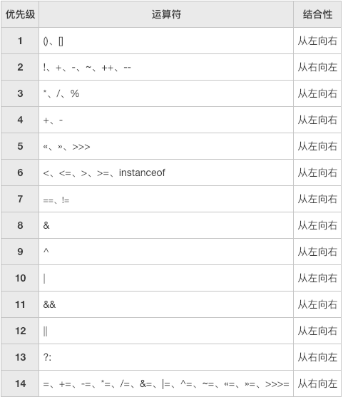
Switch语句
和C一样
变量又称为属性
本博客所有文章除特别声明外，均采用 CC BY-SA 4.0 协议 ，转载请注明出处！